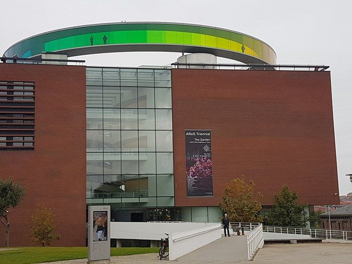

Oplev Aarhus som studerende
Aarhus er en by, der tiltrækker rigtig mange studerende fra både Danmark og andre lande i Europa og dette er en af grundene til at Smilets By byder på mange oplevelser og aktiviteter for studerende.
De mest populære oplevelser
De mest populære oplevelser i Aarhus er Den Gamle By og Aros, som hver især byder på forskellige former for kunst. Den Gamle By byder på en helt speciel tidsrejse i historien, hvor du kan få et godt indblik i, hvordan det så ud i Aarhus, da dine oldeforældre var unge. På Aros kan opleves forskellige kunstværker fra både danske og internationale kunstnere og man kan få et utroligt smukt kig udover byen fra Your rainbow panorama, som ligger på toppen af Aros.
Oplevelser uden omkostninger
Vil du gerne opleve byen uden at skulle betale noget, så byder byen også på masser af oplevelser, der er helt gratis. Du kan f.eks. tage en tur på Antikmuseet, væksthusene eller tage en tur forbi musikhuset, som igennem året byder på flere gratis koncerter. Er du lidt et naturmenneske, kan du også opleve de mange spændende natursteder i Aarhus.
Gode læsespots
Gider du ikke at studere derhjemme, eller leder du efter et godt sted at studere sammen med dine klassekammerater kan Aarhus byde på flere gratis læsepladser. Et af de nyere steder er Urban Mediaspace Aarhus på Dokk1, hvor der er masser af plads og ro til at sidde og arbejde.
Aktiviteter i Aarhus
En af de store aktiviteter i Smilets By er det årlige kapsejlads, som er et øl stafet der finder sted i Aarhus Universitetspark. Det er den største sociale begivenhed på Aarhus Universitet og der kommer op til 15.000 tilskuere hvert år. På aarhus2017.dk kan ses en kalender med alle de kommende aktiviteter. I oktober vil der blandt andet blive afholdt en Foodfilmfestival, som byder på kulturelle og gastronomiske oplevelser.